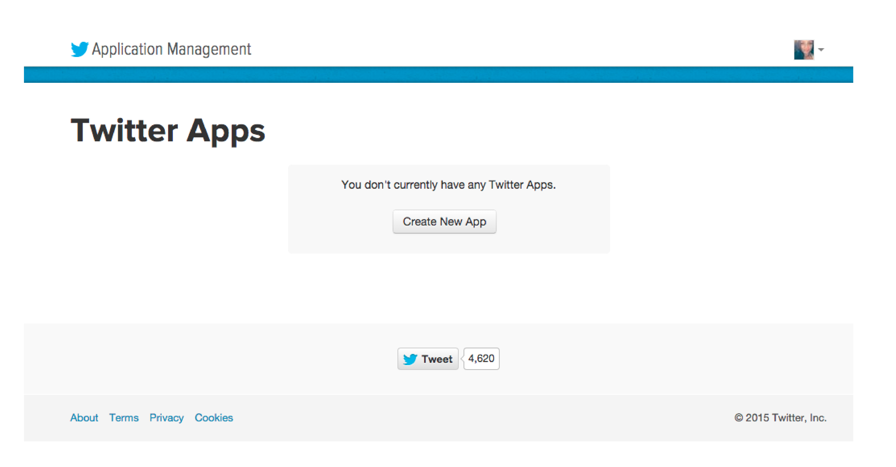
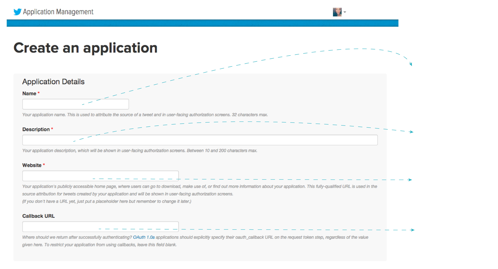
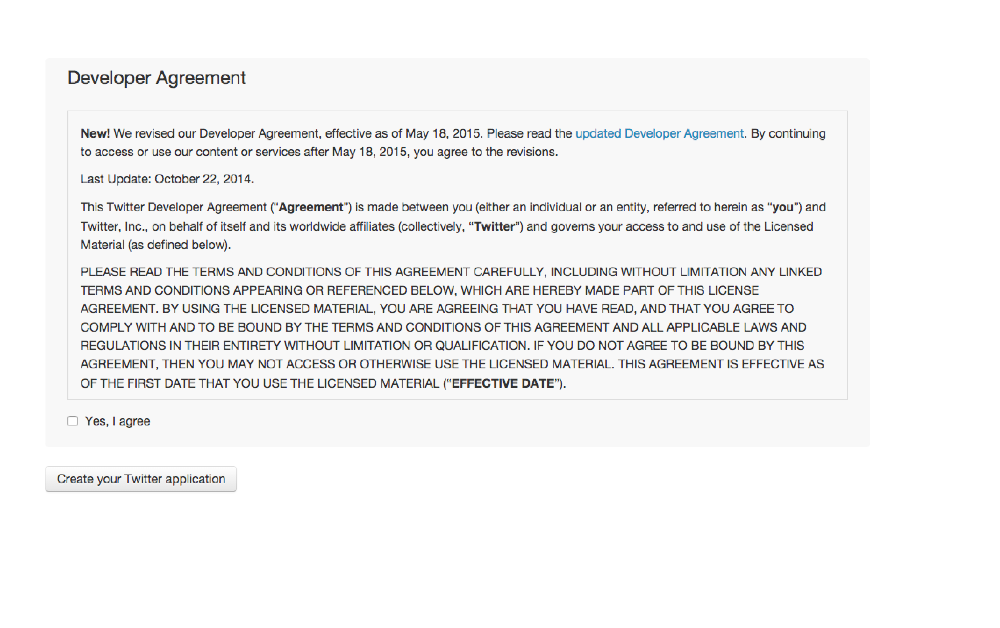
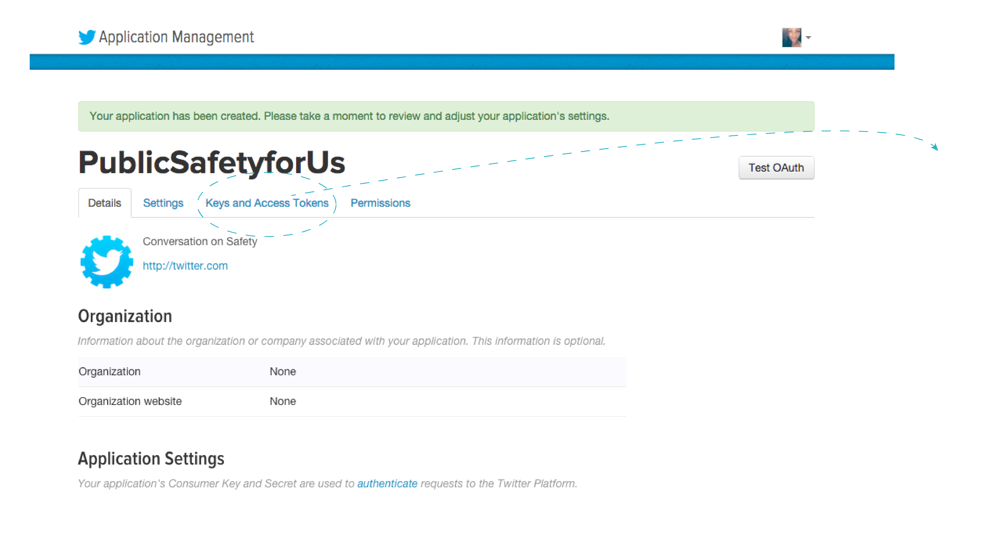
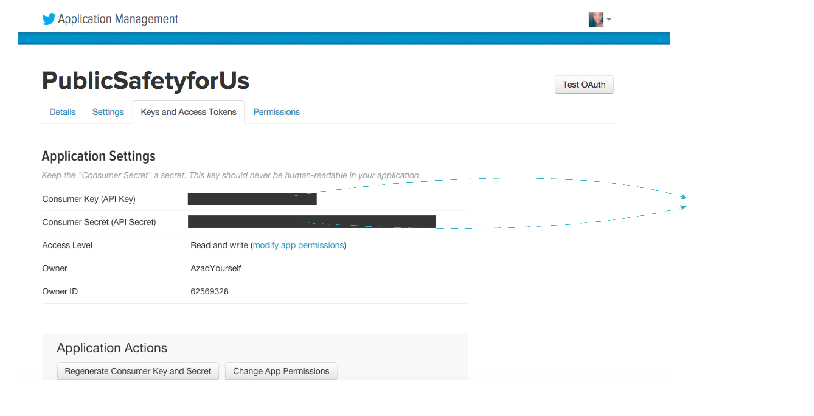

Dashtag sets up an application for you that interacts with Twitter. To allow your Dashtag page to access Twitter, Twitter requires you to register your page and gives you two 'keys' that you'll have to input back into your Dashtag page's settings. Below are directions with screenshots to guide you through this process.
1. Log In to Twitter.
2. Visit: http://apps.twitter.com/ and click 'Create New App'.
3. Fill in your Dashtag page details.
4. Read and agree to the agreement, and click 'Create Your Twitter application'.
4. Great, your Dashtag page is registered! To get the keys click on the 'Keys and Access Tokens' tab.
5. Copy the Twitter API key and secret and enter it into your Dashtag settings page.
You're done! If everything was done right your Dashtag page should be able to collect tweets!